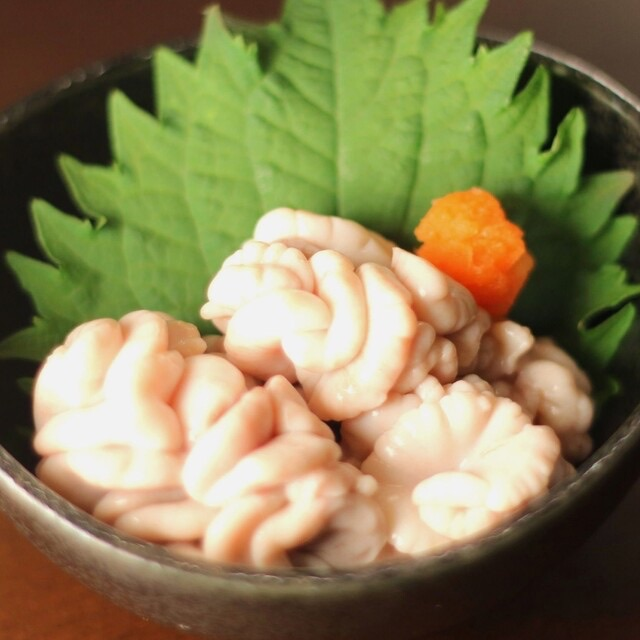
진하고 부드러운 대구 시라코(정소)를 폰즈 소스에 찍어 상큼하게 즐기세요. 모미지 오로시(무즙 고추)와 함께 드시면 더욱 좋습니다! 좋아하는 술과 함께 만끽해보세요.

대구 시라코(정소)를 다시마 위에 올려 고소하게 구웠습니다. 다시마의 감칠맛이 배인 시라코를 다시 간장에 찍어 드세요!


기름진 부리(방어) 껍질 부분을 고소하게 살짝 구웠습니다. 와사비와 함께 즐겨보세요!

부리(방어)와 무를 양념이 잘 배도록 푹 끓였습니다. 마음이 따뜻해지는 한 접시!
복어 특유의 쫄깃한 식감과 고급스러운 감칠맛을 사시미로 즐기세요.

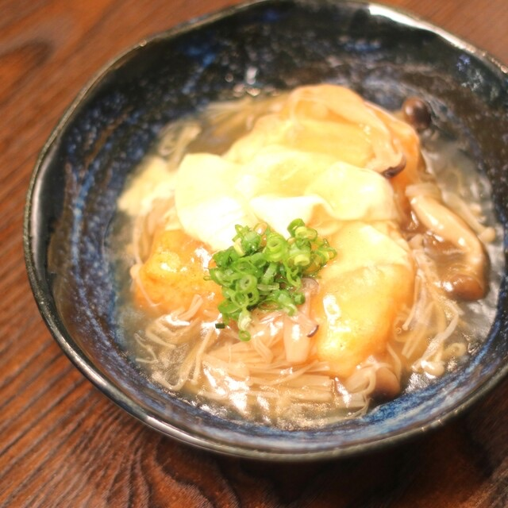
아게다시 도후(두부 튀김)에 유바(두유 껍질)와 버섯 소스를 듬뿍 얹었습니다. 뜨거울 때 드세요!


제철 채소로 만든 저희만의 수제 포테이토 샐러드입니다!
마요네즈 대신 크림치즈로 버무려 더욱 고소하게 즐기실 수 있습니다!

그날의 추천 해산물 5가지를 다채롭게 모아 사시미로 준비했습니다.

그날의 추천 해산물 3가지를 사시미로 준비했습니다.

탱글한 생새우와 아보카도를 육회 스타일로 만들었습니다. 계란 노른자를 터뜨려 잘 섞어서 드세요!

지방이 오른 제철 꽁치를 껍질만 살짝 구워 만든 사시미입니다.
약간의 양념과 함께 상큼하게 즐겨보세요!

가을에 남하하는 모도리 가쓰오는 지방이 풍부합니다.
겉을 살짝 구운 타타키를 양념과 함께 상큼하게 즐겨보세요!

신선한 아지(전갱이)에 토마토와 양파를 곁들여 카르파초로 만들었습니다. 입가심이나 안주로도 좋습니다!

추천 전채 3가지를 조금씩 모아 담았습니다. 첫 번째 요리로 추천합니다!
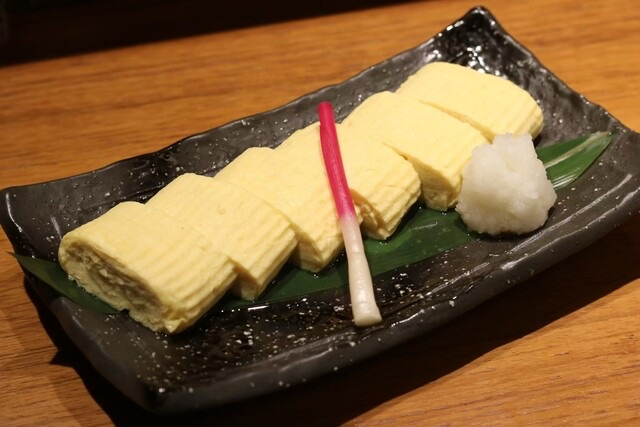
다시를 듬뿍 머금고 부드럽게 말아낸 계란말이입니다. 무즙과 함께 드세요!

소 힘줄을 부드러워질 때까지 푹 끓였습니다. 술안주로 딱 좋은 한 접시!

가지 위에 시라스(멸치)와 약미(고명)를 듬뿍 올렸습니다. 상큼하게 즐길 수 있는 요리입니다!

진한 슈토의 감칠맛을 크림치즈가 부드럽게 감싸줍니다. 좋아하는 술과 함께 즐겨보세요!

닭껍질을 폰즈 소스로 상큼하게 마무리했습니다. 술안주로 즐겨보세요!
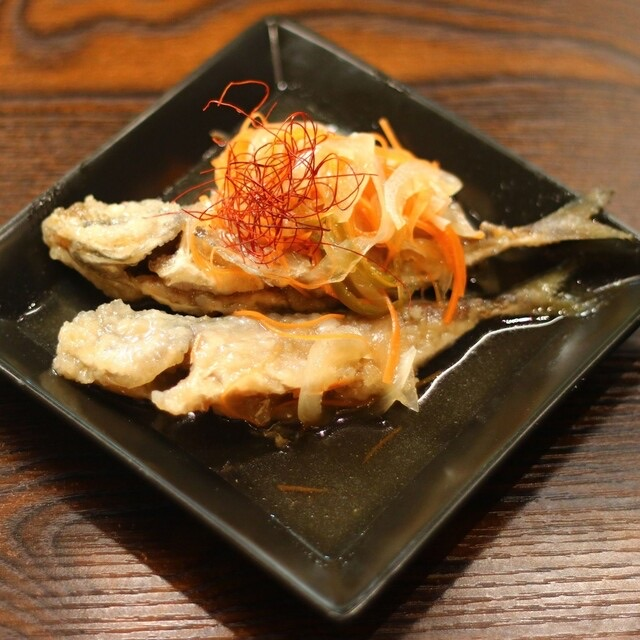
튀긴 작은 전갱이를 새콤달콤한 소스에 절인 상큼한 남반즈케입니다.

쫄깃한 식감의 상어 연골을 매실 소스에 무친 별미입니다. 술안주로 추천합니다!

부드럽고 매끄러운 유바(두유 껍질)를 사시미로 준비했습니다. 콩의 은은한 단맛을 느껴보세요!
구워서 단맛을 끌어낸 무화과를 된장 소스로 덴가쿠풍으로 만들었습니다.
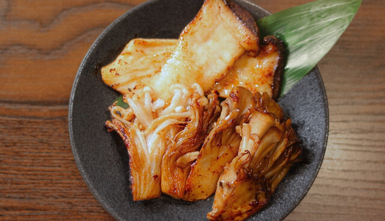
세 가지 가을 버섯을 버터에 구워 고소하게 완성했습니다.
버터의 깊은 맛과 제철 버섯의 향이 어우러진 요리입니다.

에이히레(가오리 지느러미)를 고소하게 구웠습니다. 씹을수록 감칠맛이 퍼집니다. 마요네즈와 함께 드세요!
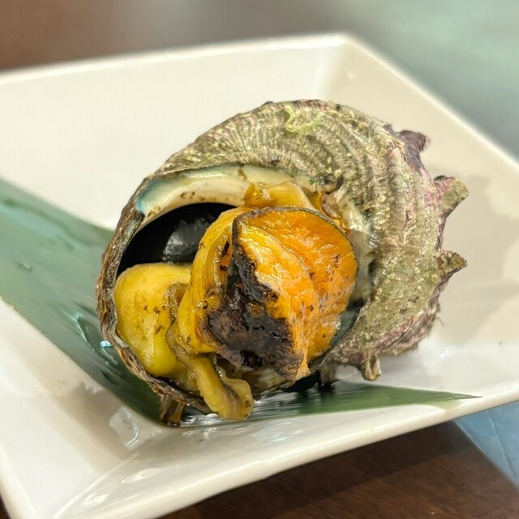
사자에(소라)를 껍질째 구웠습니다. 바다 내음을 만끽해보세요!

머리가 달린 새우를 껍질째 고소하게 소금구이로 만들었습니다. 맛이 가득한 머리까지 함께 즐기세요! ※사진은 2마리 분입니다.

가을 연어와 제철 버섯을 호일에 싸서, 풍미를 가득 담아 쪄냈습니다.
상큼한 폰즈 소스로 마무리했습니다!

오리 고기 표면을 고소하게 구워 촉촉하게 완성했습니다. 고명과 함께 드세요!

촉촉하게 구운 닭가슴살에 매실 소스와 시소잎을 곁들였습니다. 상큼하게 즐겨보세요! 사진은 2인분입니다.

닭고기와 파를 번갈아 꽂은 대표적인 야키토리(닭꼬치)입니다. 달콤짭짤한 소스로 고소하게 구웠습니다! 사진은 2인분입니다.

껍질째 감자를 포슬포슬하게 튀겼습니다. 모두 함께 즐길 수 있는 한 접시!
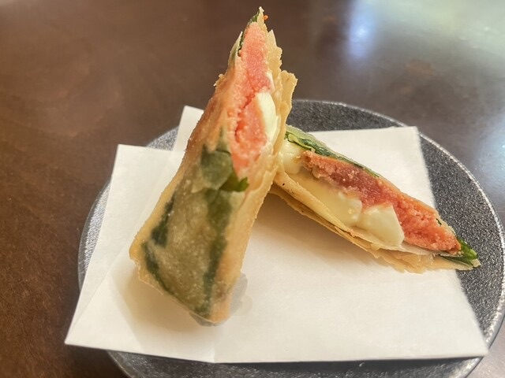
명란, 시소잎, 크림치즈를 싸서 바삭하게 튀겼습니다. 녹는 치즈와 명란의 감칠맛을 즐겨보세요!

제철 잘 익은 무화과와 크림치즈를 통째로 춘권에 담았습니다!
바삭한 튀김 속에서 무화과와 치즈가 녹아내리는 최고의 한 접시.

Sparkling water

Oolong tea
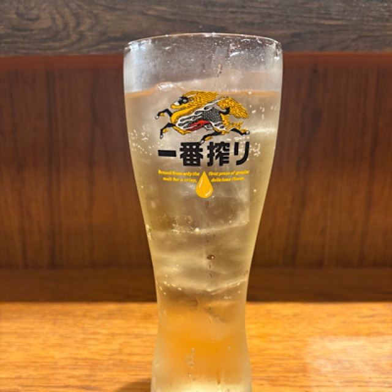


Draft beer


Whisky and Soda


Lemon sour


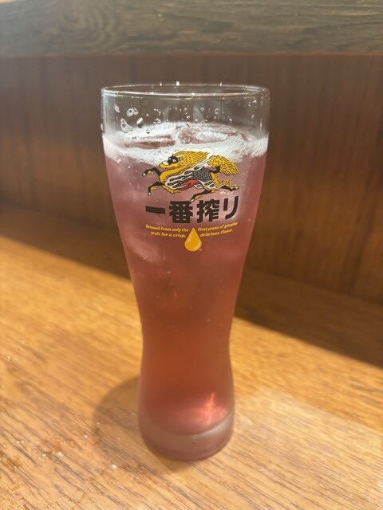

Shochu Barley on the rock

Shochu Barley and water

Shochu Barley and hot water

Shochu Barley and soda
Shochu with Oolong Tea


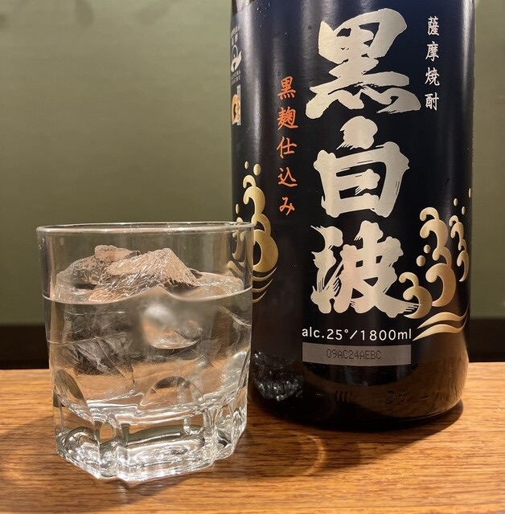
Shochu Sweet potato on the rock

Shochu Sweet potato and water

Shochu Sweet potato and hot water

Shochu Sweet potato and soda
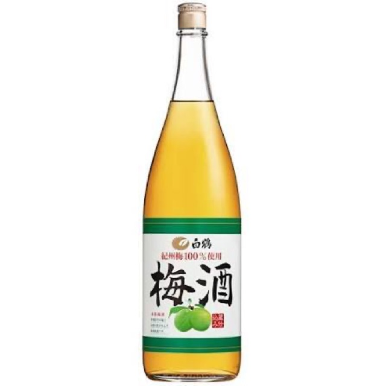

조금 연해지지만, 물 또는 소다로도 희석 가능합니다. 직원에게 말씀해 주세요.

조금 연해지지만, 물 또는 소다로도 희석 가능합니다. 직원에게 말씀해 주세요.